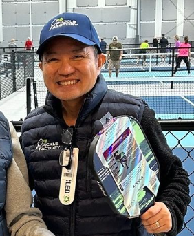

About Me
PROFESSIONAL SUMMARY
Demonstrated leadership in directing a state-of-the-art Pickleball facility, significantly improving operational efficiency,
revenue growth, and team development. Adept at leveraging skills in operations management, team mentorship, and
strategic planning to foster positive work environments and achieve visionary outcomes in healthcare and sports
management. Licensed Physical Therapist Assistant with over two decades of experience, proficient in patient
education, pain management, and enhancing mobility through innovative therapeutic methods.

Back to Home Page